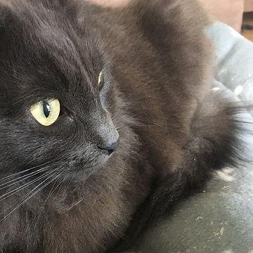
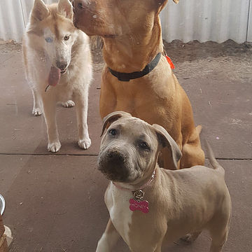
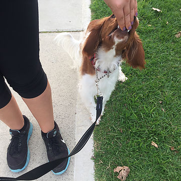

Whether you are on vacation, traveling for business, or it's just another day at the office, we will be there help provide you with your pets needs. The bonus for you is absolute peace of mind knowing that your furry friend is receiving plenty of love, exercise, and training while you’re out.
Serving Perth, Western Australia.
Caring for Your Furry Friend
Keeping You and Your Pets Happy
FOURWARD offers unrivaled dog walking and training services. Your animal will get the care you need when you need it. Untrained, and energetic animals are a hassle to live with, but you still love them anyway. Puppy socialization can make life a bit easier for you without having to worry about the detailed training aspects of puppyhood. With FORWARD pet sitting you know that your pet are in good hands while you are away. Lastly, by choosing FORWARD for dog walking and leash training, your dog will learn to behave better on leash while getting the exercise it needs, making it easier for you to spend quality time with your precious pooch.
Not spending as much time as you’d like to with your pet? Don’t let your busy schedule interfere with your furry friend’s well-being. Give your animal the care and attention they deserve by taking advantage of FOURWARD dog walking and leash training. Your dog will be walked one-on-one and trained to behave better on leash through positive reinforcement techniques. After, both your dog's mind and body will be stimulated creating one tired pup!

Pet Sitting
With FOURWARD you can be assured that your pets will be in good hands. My experience over the years of pet sitting animals anywhere from sheep to puppies has helped me perfect methods and techniques, so you can rest assured that your pet will receive the encouragement and attentiveness they need. As a vet student, your pet will be in knowledgeable and experienced hands. FOURWARD does mainly in home pet sitting with a few exceptions. Contact for more details.

Puppy Socialization
With intent to socialize, FOURWARD will walk your puppy and expose him/her to different scenarios, people, dogs, and places while training them to enjoy these without fear. Socialization is a great option if you have a young dog who is still unsure or scared of some situations. Book a walking today and help your furry friend over come his fears!

Dog Training
Whether your dog is aggressive, weak on his recall skills, or just needs some extra obedience work, I can help. Contact now for a free quote.
Get In Touch
I love animals and have years of experience working with them. You can trust me to provide a safe, comfortable, fun, and healthy environment for your furry friend. Whether it’s taking them for walks, coming by to feed them, or providing at-home care, I’ll watch over your pet as if it were my own.